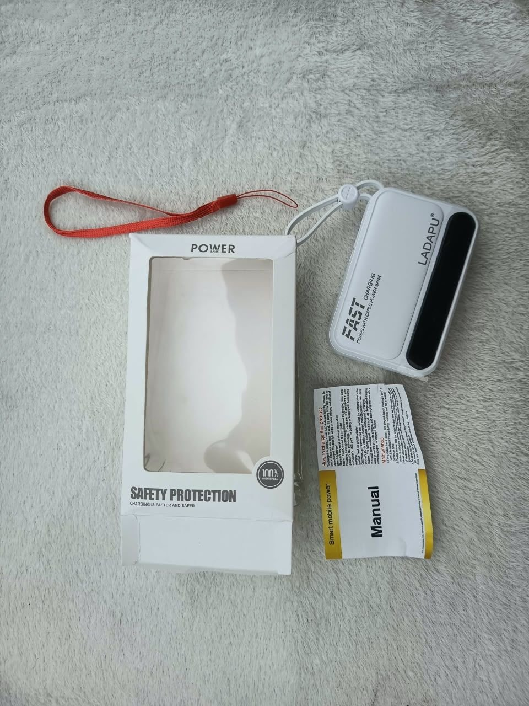

¿Otra vez se fue la corriente?
Tranquila, mami
que yo vine
preparado
¿Y eso de dónde
tú lo sacaste?
¡De tu tienda!
1LUZ SIN CORRIENTE


25 USD
Quedan 2
Lámpara recargable con panel solar y carga USB-C
2EL MÓVIL CARGADO


30 USD
Quedan 2
Power bank de 10 000 mAh con cables incluidos
Escribe por WhatsApp
APAGÓN
+53 5405 6173
Te decimos cuál te conviene
y te lo llevamos a casa
y te lo llevamos a casa